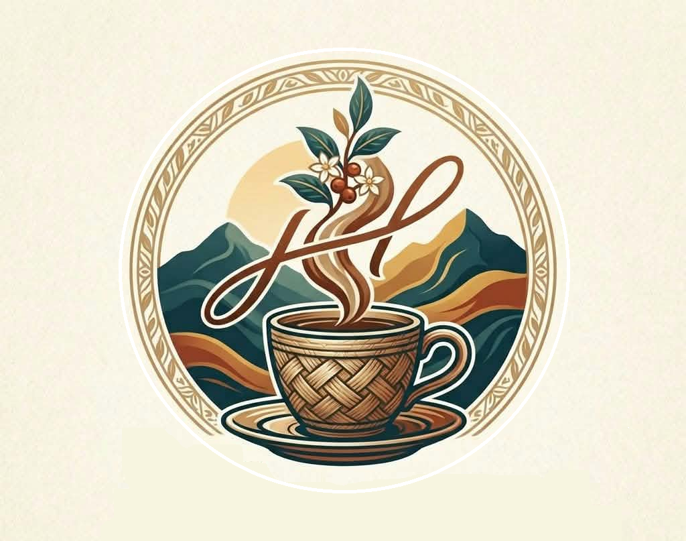
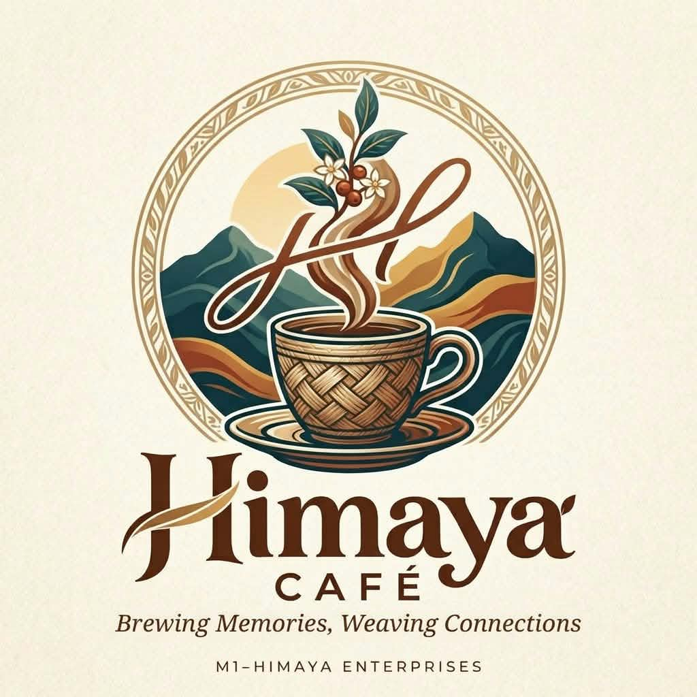

Our Mission
To serve quality coffee and affordable Filipino food in a welcoming space where students and workers can study, work, and relax comfortably.
Good food, comforting coffee, and meaningful connections — woven together in a warm space inspired by Filipino hospitality.


Himaya Café, established under M1-Himaya Enterprises, brings together diverse cultures, flavors, and experiences in one welcoming space. We offer affordable Filipino coffee and food in a comfortable, peaceful environment where students, workers, locals, and foreign visitors can study, work, socialize, and relax.
Our goal is to become a preferred hangout spot and a second home for everyone.
Explore our mission and goals ↗Our mission, vision, and objectives guide the Himaya Café experience.
To serve quality coffee and affordable Filipino food in a welcoming space where students and workers can study, work, and relax comfortably.
To become a preferred café and study hub that provides affordable food, a peaceful environment, and a welcoming space for everyone.
To promote Filipino culture through traditional Filipino foods and locally made coffee while providing an affordable and comfortable coffee shop for tourists, students, and everyone who wants to experience the taste and hospitality of the Philippines.
Serve delicious and affordable Filipino foods and coffee for tourists, students, and other customers.
Introduce and promote Filipino culture, traditions, and local products through our food and beverages.
Provide a comfortable and relaxing place where students can study, do schoolwork, and spend time with friends.
Give tourists an opportunity to discover and appreciate the unique flavors of Filipino cuisine and coffee.
Provide friendly customer service that shows the kindness and hospitality of Filipino people.
Support local farmers and suppliers by using locally produced ingredients and coffee whenever possible.
Grow a successful business while sharing the beauty of Filipino culture with both local and foreign customers.
A thoughtfully welcoming place for studying, working, sharing meals, and slowing down with people who matter.
Local-inspired flavors and the warmth of Filipino hospitality.
Designed around relaxed conversations, study sessions, and friendly gatherings.
Accessible food and drinks for students, workers, families, and visitors.
We're building a café experience around great food and genuine connections. Follow our journey and discover what Himaya Café is all about.